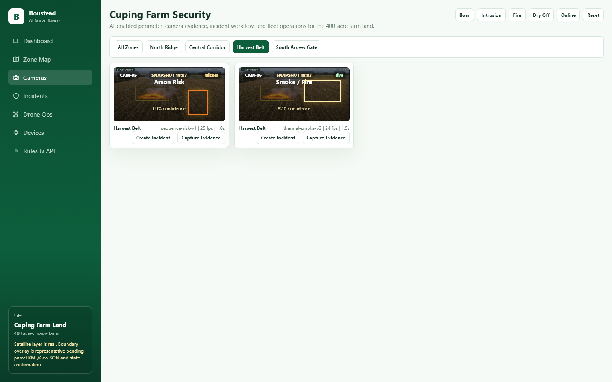
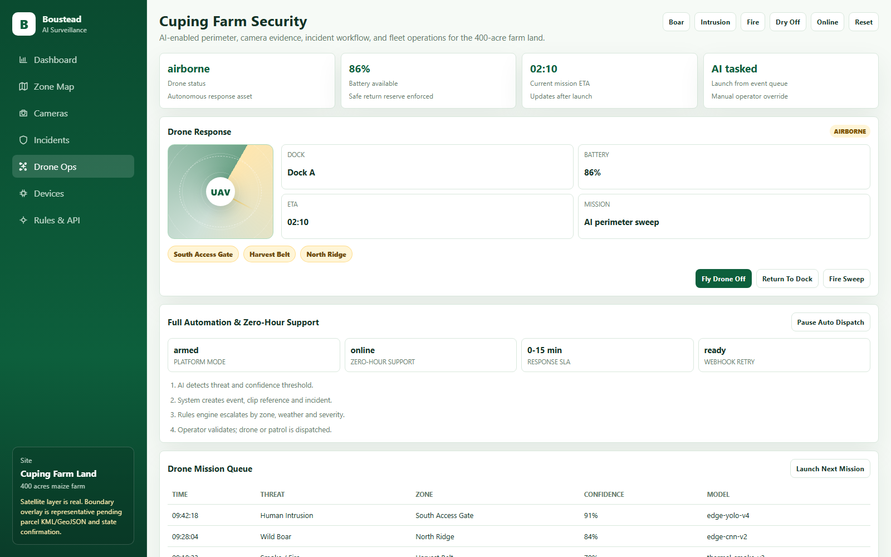
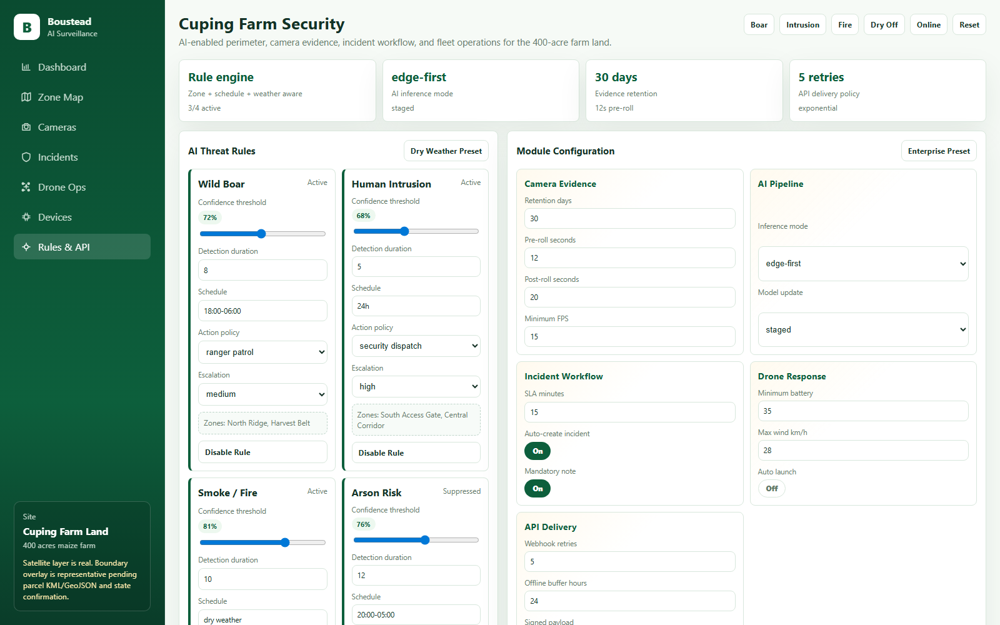

Boar, human, fire and arson risk
Threat-specific model families surface confidence, location, source device, evidence clip, and recommended response.
A production-oriented surveillance platform concept for maize plantation protection: perimeter monitoring, wild-boar detection, intrusion triage, fire/arson escalation, drone verification, device health, and API-ready operations.

The platform combines real-time camera feeds, AI model outputs, rule-based escalation, evidence capture, drone response, and device health into one command workflow. AI is used to detect and prioritize; operator validation remains in the chain for enforcement and dispatch decisions.
Threat-specific model families surface confidence, location, source device, evidence clip, and recommended response.
Representative satellite boundary, risk zones, perimeter sectors, and animated zone focus for selected areas.
When a section is selected, the platform zooms the map and brings up local camera feeds and detections.
New, acknowledged, verified, dispatched, and closed states with feedback labels and operator notes.
Configurable thresholds, schedules, confidence rules, webhook delivery, offline queue, and escalation policy.
Drone dispatch panel, battery policy, mission route, device heartbeat, firmware, storage, network and tamper status.
This scrollytelling sequence is justified because the product is spatial and operational: each step shows how an alert moves from farm context into evidence, response, and governance.
Leadership and operators see critical incidents, open workload, latency, risk score, device health, and queue depth immediately.
The satellite view makes the perimeter visible, then selected zones reveal the feeds and AI detections that matter locally.
Operators avoid searching through every camera because the selected zone brings up the relevant feed cards and evidence actions.
Drone verification supports fast triage for fire, arson, intrusion, and remote perimeter checks before sending ground teams.
Rules define when AI creates incidents, when zero-hour support is triggered, how APIs retry, and what is recorded for audit.

Command KPIs, incident priority queue, camera evidence wall, event stream, automation and drone quick status.
Satellite map, full boundary overlay, perimeter sectors, animated zone zoom, focused camera media and AI zone intelligence.
Mock CCTV evidence cards, confidence labels, model metadata, capture evidence, and create incident actions.
Operator lifecycle management from new detection to closure, including validation labels and timeline notes.
Drone launch, return-to-dock, mission ETA, route visualization, battery policy and AI tasking state.
Fleet status, heartbeat, network, storage, tamper, health sweep, OTA, reboot and recovery actions.
Threat thresholds, schedules, action policies, module configuration, response matrix, API endpoints and audit log.
Escalation model for high-severity events, dry-weather mode, support SLA, webhook retry and offline buffer.
These images were captured from the local `index.html` prototype and can be inserted into a proposal deck or RFI response.
Executive and operator overview.
Map zoom and focused camera evidence.

Zone-filtered media evidence.

Drone status, route and response actions.

AI thresholds and module settings.
Confirm actual land polygon, camera inventory, cellular coverage, towers, drone permissions and response SOP.
Deploy high-risk zones first, validate detection latency, false alarms, miss rate, incident workflow and uptime.
Scale camera, thermal, weather, drone and device-health modules using validated AI rules and APIs.
Use zero-hour support, firmware OTA, model updates, audit logs and monthly performance reporting.
The prototype now communicates a full operating system: map, camera evidence, workflow, drone, fleet health, rules and API governance.
The land boundary remains representative. The proposal should clearly state that final parcel KML/GeoJSON and survey confirmation are required.
Some controls are mock actions. Proposal wording should label these as prototype interactions until backend, camera, drone and alert integrations exist.
Screenshot review confirms visual hierarchy, but keyboard traversal, screen reader naming and reduced-motion behavior still need a dedicated pass before production.